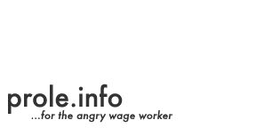

|  | |
|---|---|
|
Some interesting sites... | |
Tintin, Captain Haddock and his mates are angry British proles, organizing, squatting, looting, rioting. | |
An annual communist theoretical magazine from the UK. Influenced by German/Dutch and Italian left communism, the situationists, class struggle anarchism and the Italian autonomia movement. | |
Greek communist group with interesting articles on theory, crisis and current events. | |
A Swedish communist group, who write about "faceless resistance", the experience of workers and the ways we fight back every day. Their name means "Struggle Together!" | |
Website of Kolektivně proti kapitálu (KPK), a Czech / Slovak communist group whose name means "Collectively against capital." | |
Website of a collective interested in worker inquiry and autonomia. Includes a detailed text on working in call centers. | |
Resources for libertarian communists of all kinds, from the UK. Includes forums, a large library of radical texts, and much more... | |
A collection of writings from a San Francisco anti-state communist with a take no prisoners style. | |
A huge archive with everything Marx and Engels, and a lot of texts from other marxists and writers, radicals and revolutionaries who are not marxists. | |
Website of an anarchist collective in Modesto, California. | |
A Swedish language site with articles on workers resistance. The name means "Mutiny & Wreckage." | |
A large multi-lingual archive with everything relating to the Ukranian anarcho-communist Nestor Makhno and Makhnovist movement. | |
A newsletter with reports and analysis from around the world about work, exploitation and the fight against them. | |
Magazine in English and Swedish (and sometimes French) with an interest in the exploring communisation and communist theory. | |
A comprehensive archive of texts by and about the Situationist International. | |
Website (in French and English) with the writings of Gilles Dauvé and Karl Nesic. Also includes some texts from the French communist magazine La Banquise. | |
Analysis of work, capital, crisis and resistance from around the world. Wildcat is based in Germany and have articles in German and English (and are not to be confused with Wildcat US/UK which has a very different perspective).
|
|
 Send translations, questions, comments, and corrections to:
Send translations, questions, comments, and corrections to: